Separação e embalagem
Na separação do ERP da Olist você consulta pedidos e notas por etapa, separa os itens e embala os pedidos. Também imprime a lista, a DANFE e as etiquetas, gera notas fiscais e envia os pedidos para a expedição.
As configurações definem quando a venda entra na separação, o que é impresso e se a embalagem pode criar expedições. Os marcadores identificam os registros na fila. A consulta fica em Vendas > Separação.
Pré-requisitos
- Os pedidos ou as notas precisam já estar na separação. Em Configurações da separação, Envio para a separação define se o envio é manual ou automático.
- Se alguma opção não aparecer para você, peça acesso ao administrador da conta.
Importante
- Para embalar pela barra, selecione ao menos um item. Sem seleção, Embalar pedidos avisa Nenhum item selecionado para embalar. Fechar (ESC) fecha o aviso.
- A pergunta Criar e concluir expedições aparece ao embalar quando Permitir criar e concluir expedições ao iniciar embalagem de pedidos está marcada.
- Embalar por produto não está disponível nos planos Começar e Crescer.
- O botão Ações não abre menu sem nenhum item selecionado.
- Na etapa Embaladas checkout, o menu da linha não oferece Separar pedido, Embalar pedido checkout, Reiniciar progresso de separação nem Imprimir DANFE.
- Não é possível alterar manualmente a situação de pedidos cancelados. Remova esses pedidos da separação antes.
Instruções
Consultar a fila
- Acesse Vendas > Separação.
- Escolha a etapa: Aguardando separação, Em separação, Separadas ou Embaladas checkout. Cada etapa mostra um contador.
- Pesquise por destinatário ou número.
- Filtre por período, marcador, e-commerce, depósito, estado, cidade, produto e origem da separação. No período, o tipo pode ser Data de envio a separação, Data do pedido ou Data máxima do despacho, e o intervalo Sem filtro, Últimos 30 dias, Últimos 7 dias, Do dia, Do mês ou Do intervalo. A origem pode ser Pedidos, Notas ou Fulfillment.
- Em Informações visíveis, escolha as colunas da lista: Identificação, Data de envio a separação, Destinatário, UF, Cidade, Forma de envio, Data do pedido, Separação, Data prevista de entrega, Prazo máximo de despacho, Marcadores, Integrações e Situação. A lista mostra os itens da etapa e dos filtros, prontos para separar, embalar ou imprimir.
Separar pedidos
-
Na lista, clique em Separar pedidos (atalho ctrl+s), em Separar pedido no menu da linha ou na mesma ação na barra da seleção.
-
Se aparecerem Abrir lista de separação, Imprimir lista de separação e Marcar como separado, escolha a opção. As duas primeiras estão ligadas à situação em separação e a terceira a separado. Em outros acessos, Separar pedidos abre direto Separação de mercadorias.
-
Na aba produtos, confira Produto, Cód. (SKU/GTIN), Qtd, Un e Localização. Use o link visualização padrão quando precisar dele.
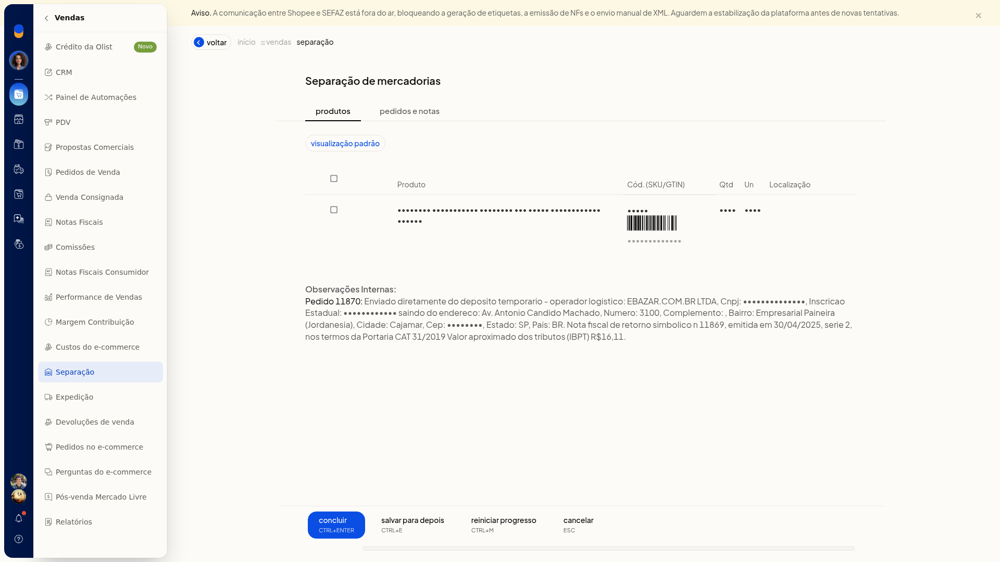
-
Abra a aba pedidos e notas para ver o pedido, os itens e a Observação Interna.
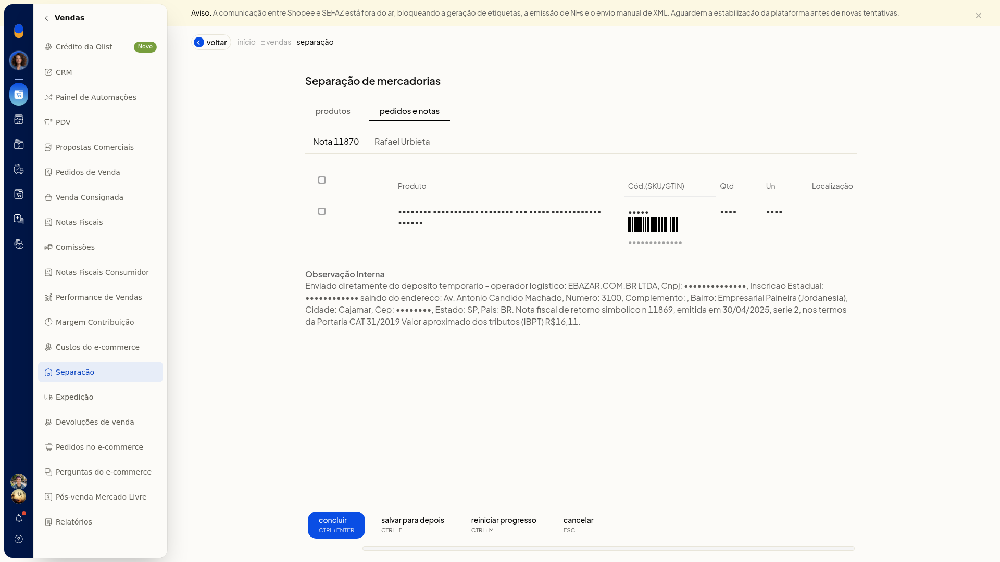
-
Clique em Concluir (ctrl+enter) para encerrar a separação. Salvar para depois (ctrl+e) guarda o andamento, Reiniciar progresso (ctrl+m) recomeça e Cancelar (esc) volta à lista.
Separar fulfillment no menu Ações (ctrl+f) e o atalho ctrl+g só aparecem se a empresa usa envios fulfillment.
Embalar pedidos
-
Selecione ao menos um item da lista.
-
Clique em Embalar pedidos (ctrl+e) ou em Embalar pedido checkout no menu da linha.
-
Se abrir Criar e concluir expedições, clique em Continuar (CTRL+ENTER) para criar e concluir os agrupamentos de expedição dos pedidos a embalar, ou em Deixar para depois (ESC) para seguir sem criar a expedição.
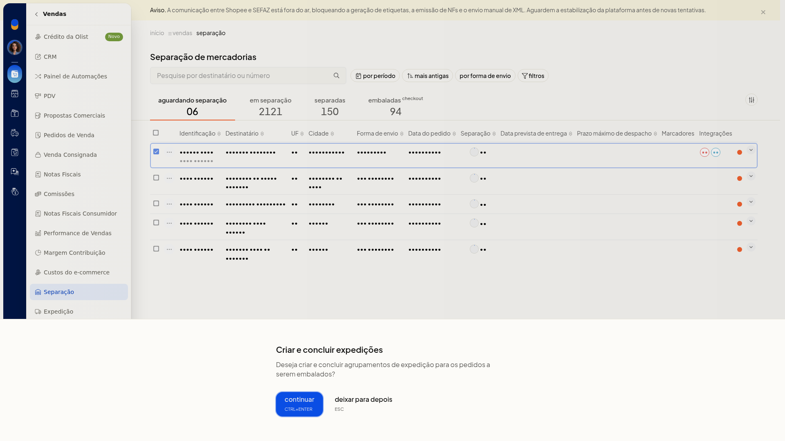
-
Em Embalagem de mercadorias, escolha Embalar por pedido ou Embalar por produto.
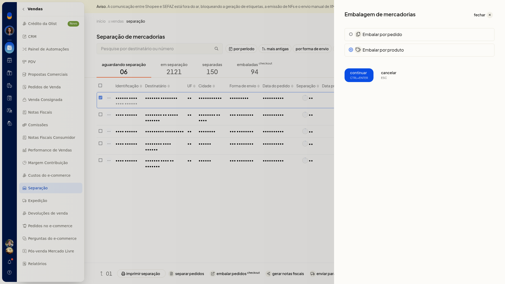
-
Clique em Continuar para seguir com a opção escolhida. Cancelar fecha a tela e volta à lista.
Embalar fulfillment (ctrl+h) só aparece se a empresa usa envios fulfillment.
Usar as ações da linha e da seleção
-
Na etapa Aguardando separação, abra o menu da linha. As ações são Separar pedido, Embalar pedido checkout, Reiniciar progresso de separação, Imprimir separação, Gerenciar lotes de produtos, Imprimir DANFE, Imprimir etiquetas de volumes, Alterar situação, Marcadores e Remover da separação.
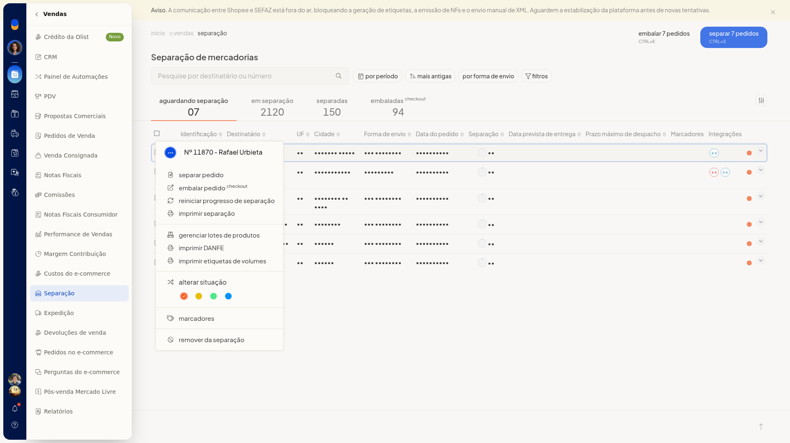
-
Selecione um pedido. A barra mostra a quantidade e Imprimir separação, Separar pedidos, Embalar pedidos checkout, Gerar notas fiscais, Enviar para expedição e Mais ações.
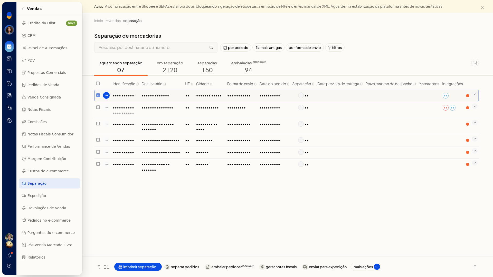
-
Abra Mais ações para Gerar notas fiscais em lote, Imprimir etiquetas de envio, Imprimir etiquetas de volumes, Imprimir etiquetas de separação, Alterar situação, Alterar marcadores e Remover da separação. A emissão da nota no checkout só segue se a emissão de nota fiscal estiver autorizada.
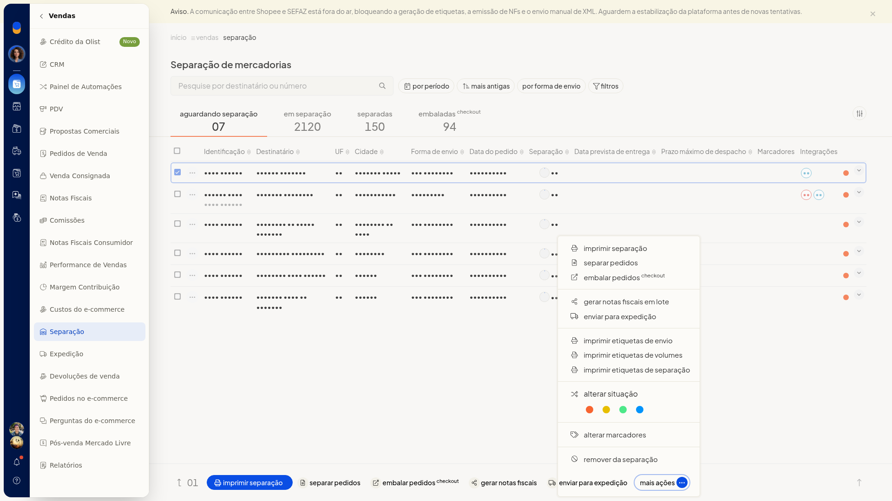
-
Na etapa Embaladas checkout, use o menu da linha para Imprimir separação, Gerar nota fiscal, Gerenciar lotes de produtos, Imprimir etiquetas de volumes, Alterar situação, Marcadores e Remover da separação.
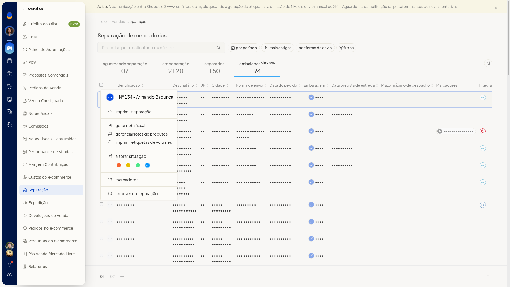
Configurar a separação
-
Acesse Configurações > Configurações ERP > Vendas > Configurações da separação.
-
Em Envio para a separação, escolha Manual, Automático ao salvar o pedido, Automático ao aprovar o pedido, Automático ao salvar a nota fiscal ou Automático ao autorizar a nota fiscal.
-
Em Imprimir automaticamente ao finalizar embalagem, marque DANFE, Etiqueta de envio ou as duas. Em Layout para impressão automática da DANFE, escolha Padrão, Simplificado ou Etiqueta.
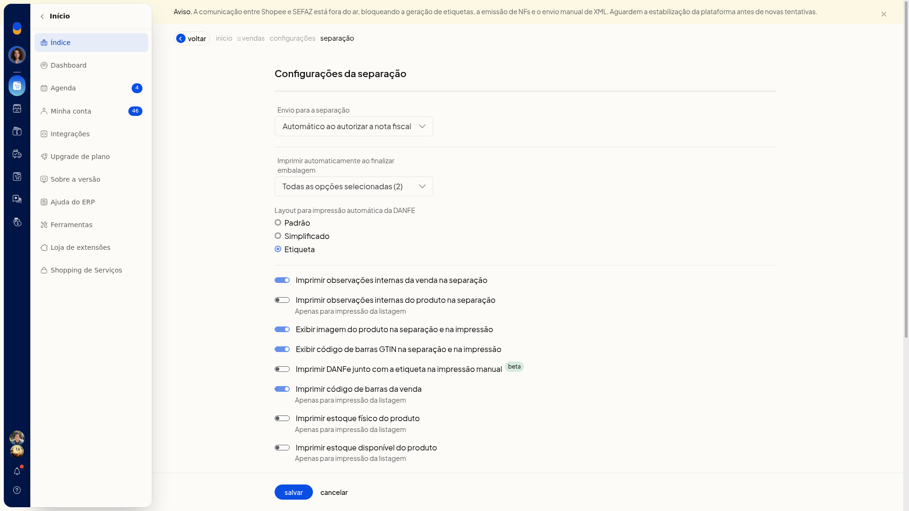
-
Ajuste as demais opções do formulário.
Impressão
- Imprimir observações internas da venda na separação
- Imprimir observações internas do produto na separação: vale apenas para a impressão da listagem
- Exibir imagem do produto na separação e na impressão
- Exibir código de barras GTIN na separação e na impressão
- Imprimir DANFe junto com a etiqueta na impressão manual beta
- Imprimir código de barras da venda: vale apenas para a impressão da listagem
- Imprimir estoque físico do produto: vale apenas para a impressão da listagem
- Imprimir estoque disponível do produto: vale apenas para a impressão da listagem
- Separador entre pedidos na impressão térmica: Pontilhado ou Quebra de página
Lotes, kits, expedição e bloqueio
- Reservar lotes automaticamente ao separar pedidos
- Substituir kits pelos seus componentes na separação e embalagem de produtos
- Permitir criar e concluir expedições ao iniciar embalagem de pedidos
- Confirmar número de volumes ao término da embalagem: vale apenas para embalagem individual ou por pedido
- Ocultar ação para adicionar itens manualmente no processo de embalagem
- Receber marcadores da venda ou da nota fiscal nas separações/embalagem: só os marcadores da origem principal são enviados, com prioridade para o pedido de venda
- Impedir que mais de um usuário separe ou embale o mesmo pedido: o pedido em separação ou embalagem fica bloqueado para as outras pessoas da conta
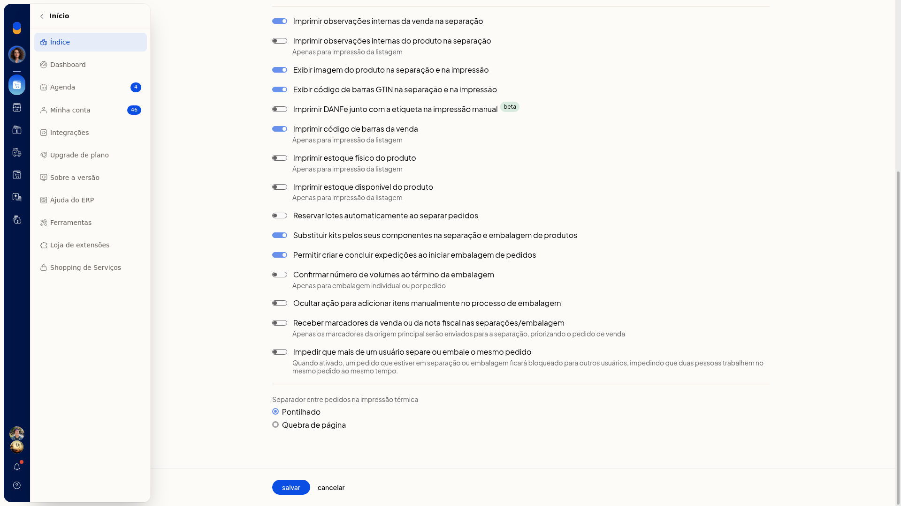
- Clique em Salvar para gravar as opções. Cancelar descarta o que não foi salvo.
Incluir marcador da separação
-
Acesse Configurações > Configurações ERP > Vendas > Configurações dos marcadores na separação.
-
Na seção Separação, use a pesquisa e a coluna Descrição para ver os marcadores já criados e clique em Incluir marcador.
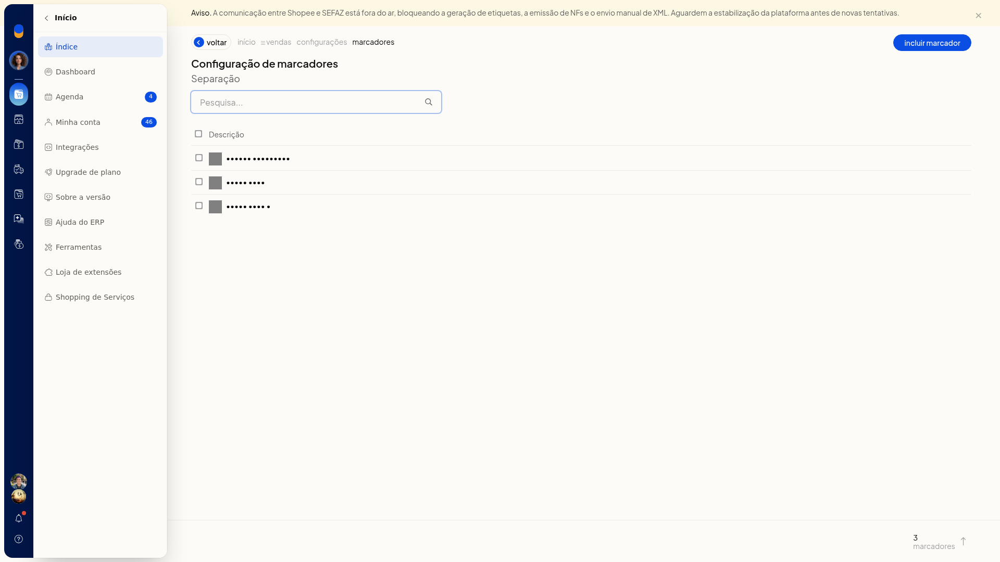
-
Preencha Descrição e escolha Cor do marcador.
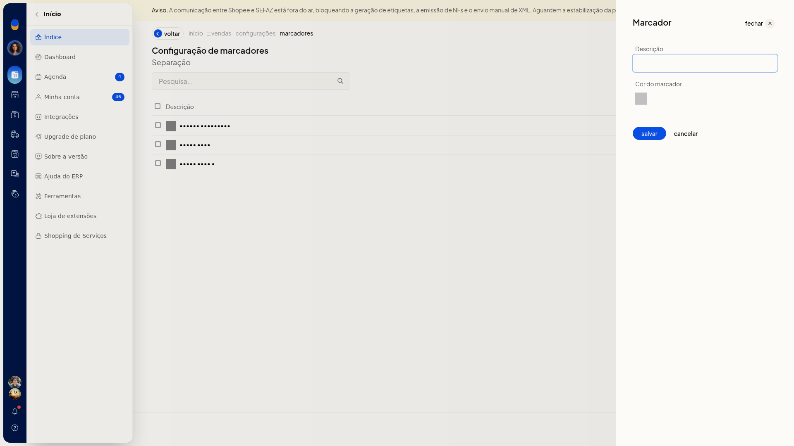
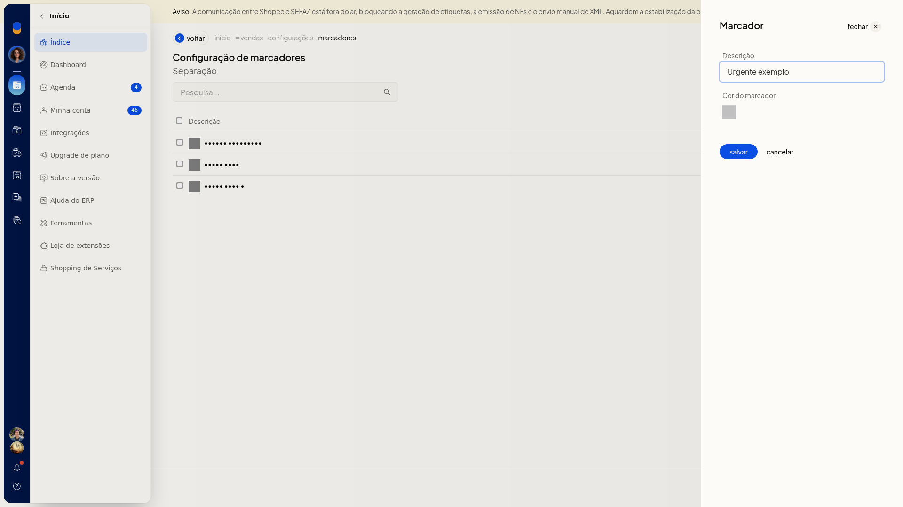
-
Clique em Salvar para criar o marcador. Cancelar fecha o painel e o marcador não entra na lista. Para usar um marcador no pedido, abra Marcadores no menu da linha ou Alterar marcadores na seleção. O filtro da lista também oferece Sem filtro por marcador e Sem marcadores.
Resultado
A lista exibe a etapa escolhida com o contador. Separar pedidos abre Separação de mercadorias, com as abas produtos e pedidos e notas. Ao embalar um item selecionado, pode abrir Criar e concluir expedições; Deixar para depois abre Embalagem de mercadorias. Cancelar em Separação de mercadorias ou em Embalagem de mercadorias devolve à lista. Cancelar em Incluir marcador fecha o painel e o marcador não salvo não aparece na lista.
Informações adicionais
Condições da impressão de etiquetas
- A impressão das etiquetas do gateway logístico exige que já exista uma expedição da origem.
- A etiqueta de transportadora só é impressa quando a forma de envio é transportadora.
Emissão de nota no checkout
A emissão da nota no checkout só segue se a emissão de nota fiscal estiver autorizada.
Separação bloqueada
Com a separação bloqueada por outra pessoa, quem não tem permissão de alterar a situação não consegue mudá-la.